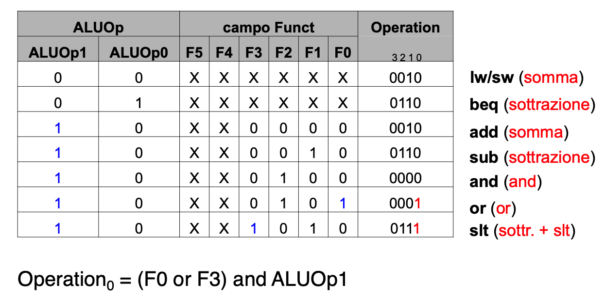

Progetto CPU a singolo ciclo
1 Processore: Datapath & Control
Cerchiamo di progettare un processore MIPS-like semplificato in grado di eseguire solo:
- Istruzioni di memory-reference: lw, sw
- Istruzioni arithmetic-logic: add, sub, and, or, slt
- Istruzioni di control-flow: beq, j
1.1 Formati delle istruzioni
- R-type:
- op = 6 bit
- rs = 5 bit
- rt = 5 bit
- rd = 5 bit
- shamt = 5 bit
- funct = 6 bit
- I-type:
- op = 6 bit
- rs = 5 bit
- rt = 5 bit
- immediate = 16 bit
- J-type:
- op = 6 bit
- target address = 26 bit
1.1.1 Fammi spiegare:
- op: codice operativo dell’istruzione
- rs, rt, rd: dei registri sorgente (rs,rt) e destinazione (rd)
- shamt: shift amount ( è diverso da 0 solo per istruzioni di shift )
- funct: seleziona le varianti dell’operazione specificata in op
- immediate: offset dell’indirizzo (load/store) o valore immediato ( op.aritmetiche )
- target address: indirizzo target di un’istruzione di jump
2 Passi di progetto
- Analizzare il set di istruzioni \(\rightarrow\) verificare i requisiti del datapath
- Il Datapath deve includere gli elementi di memoria corrispondenti ai registri dell’ISA
- Tipicamente sono necessari altri registri, usati internamente o non referenziabili direttamente attraverso l’ISA \(\rightarrow\) es. PC( Program counter )
- Analizza la semantica di ogni istruzione, data in termini di trasferimenti dai registri, ed eventuali operazioni tra i registri
- Il datapath deve fornire i cammini per tutti i register transfer necessari, e gli accessi alla memoria
- Il Datapath deve includere gli elementi di memoria corrispondenti ai registri dell’ISA
- Seleziona i vari componenti del datapath (es. ALU) e stabilisci la metodologia di clocking
- Assembla il datapath in accordo ai requisiti, aggiungendo i segnali di controllo
- Analizza l’implementazione di ogni istruzione per determinare il setting dei segnali di controllo che provocano i vari register transfer
- Assembla la logica di controllo in accordo al punto 4
3 Implementazione generica a singolo ciclo
- Usa il registro Program Counter (PC), interno alla CPU, per fornire alla memoria l’indirizzo dell’istruzione
- Leggi l’istruzione dalla memoria (fetch)
- Interpreta i campi dell’istruzione per decidere esattamente cosa fare (decode)
- Usa l’ALU per l’esecuzione (*execute)
- add/sub/and/or/slt usano l’ALU per le operazioni corrispondenti, e il Register File per accedere ai registri
- Le istruzioni di lw/sw usano l’ALU per calcolare gli indirizzi di memoria
- L’istruzione di beq usa l’ALU per controllare l’uguaglianza dei registri
- Modifica il PC e reitera il ciclo
\(\rightarrow\) l’ALU, il Register File, il PC dovranno far parte del Datapath
4 Incremento del PC
Addizionatore aggiuntivo
- Necessario per realizzare, all’interno dello steso ciclo di clock
- Il Fetch dell’istruzione
- l’incremento del PC
- Non possiamo usare l’ALU principale perchè questa p già utilizzata per eseguire le istruzioni
- Stiamo implementando una CPU a singolo ciclo Dove abbiamo risorse replicate
- Nota che della memoria istruzioni viene letta una nuova isruzione ad ogni ciclo di clock
- Il segnale di MemRead deve essere sempre affermato
5 Calcolo dell’indirizzo di Branch
Ulteriore addizionatore \(\rightarrow\) ancora risorse replicate
- necessario per realizzare il calcolo dell’indirizzo di salto di branch
6 Controllo ALU
Dobbiamo definire il circuito di controllo per calcolare i 4bit di controllo dell’ALU (operation) da assegnare come segue in base al tipo di istruzione, ovvero ai campi op e funct dell’istruzione
- Il circuito sarà a 2 livelli
- Il primo livello calcolerà \(ALUOp = ( ALUOp_{1} \; ALUOp_{0} )\) in base all’op code
- Il secondo livello calcolerà effettivamente operation in base al campo funct e a ALUOp
- Il circuito di primo livello dovrà semplicemente definire la configurazione dei bit \((ALUOp_{1} \; ALUOp_{0})\) sulla base di op
- Definiamo ora la tabella di verità che sulla base di ALUOp e funct determina i 3 bit del controllo dell’ALU (operation)
- A partire dalla tabella qui sopra possiamo definire il circuito ALUControl per il calcolo di Operation
- Operation 0 
- Operation 1
- Operation 2
- Operation 3
7 Datapath esteso per l’esecuzione delle Jump
8 Componenti CPU (Datapath + Control) e Memoria
9 Controllo a singolo ciclo
Il controllo per la realizzazione a singolo ciclo è molto semplice
- Definito da una coppia di tabelle di verità
- Circuito combinatorio
Il circuito principale si basa sul codice dell’operazione da eseguire
Il controllo secondario determina l’ingresso all’ALU, ovvero il segnale Operation
Il controllo della CPU a singolo ciclo è combinatorio Il Datapath è invece sequenziale
- I suoi output dipendono anche dal valore dei registri
- ES. ZERO, oppure l’indirizzo della memoria dati, oppure il valore da immagazzinare in memeoria in conseguenza di una store, dipendono dai valori dello stato interno del DATAPATH ( ovvero dal contenuto dei registri )
Dobbiamo attendere che tutti i circuiti siano stabili, sia quelli del datapath che quelli del controllo, prima di attivare il fronte di salita/discesa del clock.
Clock in AND con i segnali di controllo di scrittura ( registri/memoria )
- I valori vengono scritti in corrispondenza del fronte di salita/discesa del clock solo se i segnali relativi sono affermati
Ciclo di clock determinato sulla base del cammino più lungo che i segnali elettrici devono attraversare
- ES: l’istruzione lw è quella più costosa:
- Reg. File(Read)
- ALU e Adders
- Mem. Dati
- Reg. File(Write)
- i circuiti del controllo agiscono in parallelo alla lettura dei registri
10 Determiniamo il ciclo di clock per LW
Ipotiziamo i costi in ns per le varie componenti
- Mem. Istr/Dati: 200 ps
- Reg. File: 100 ps
- ALU: 200 ps
- Control: < 100 ps
Consideriamo l’istruzione LW, che abbiamo detto essere la più costosa
- L’unica che usa sia il Register File in lettura/scrittura che la Memoria dati
- Ciclo di clock lungo 800 ps
11 Problemi con il singolo ciclo
Il ciclo singolo e di lunghezza fissa penalizza le istruzioni veloci
Anche se complesso, si potrebbe realizzare una CPU a ciclo di clock variabile con i seguenti vantaggi:
- Istruzioni diverse dalla LW eseguite in un tempo < 8 ns, mentre se il ciclo è fisso sarebbero sempre necessari 8 ns
12 Ciclo fisso vs variabile
Si consideri di conoscere che in un generico programma, le istruzioni sono combinate in accordo a questo mix:
- 24% load
- 12% store
- 44% formato-R
- 18% branch
- 2% jump
Quale è la lunghezza media ( periodo medio ) del ciclo di clock nell’implementazione a ciclo variabile?
- Periodo medio = \(800 \times 24% + 700 \times 12% + 600 \times 44% + 500 \times 18% + 200 \times 2% = 630\) ps
Le prestazioni della CPU sono calcolabili rispetto a NI ( Numero Istruzioni eseguite da un programma )
- \(T_{var} = NI \times periodo = NI \times 630\) ( variabile )
- \(T_{fisso} = NI \times periodo = NI \times 800\) ( fisso )
Facendo il rapporto: \(T_{fisso} / T_{var} = 800 / 630 = 1.27\)
Quindi possiamo dire che l’implementazione a clock variablie è l’1.27 volte più veloce!
Se consideriamo istruzioni più complesse della LW, come leistruzioni FP di moltiplicazione. l’implementazione a ciclo fisso risulta ulteriormente penalizzata